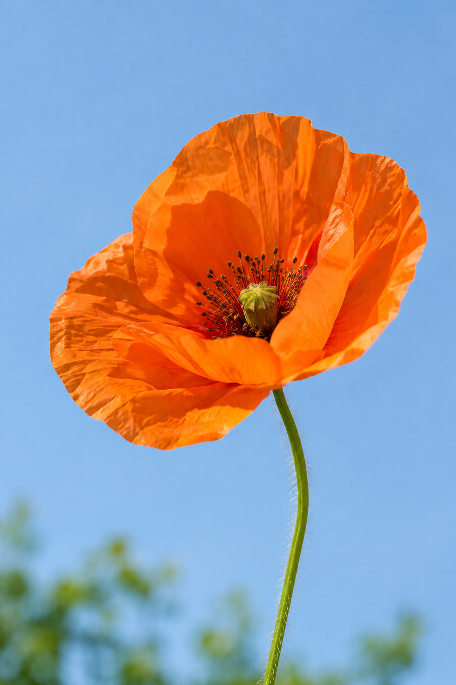
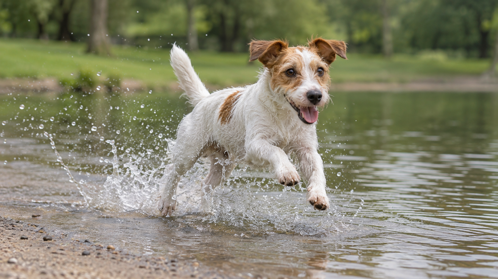
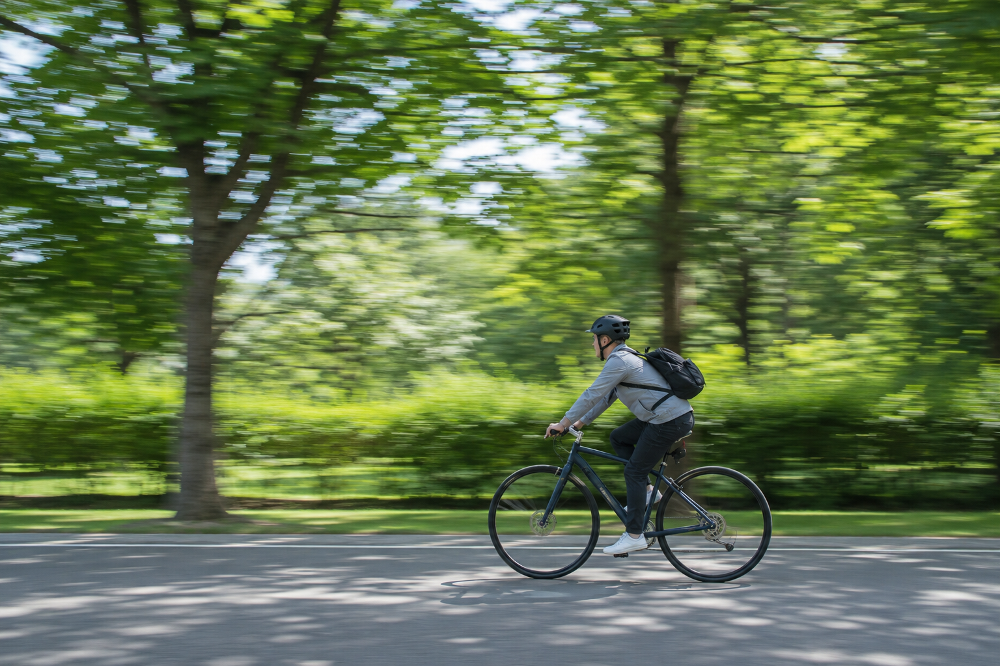

Photography for beginners
Take better photos.
Practical guides and short exercises for phones and entry-level cameras—focused on what to choose, what to observe, and what to change next.
No gear rankings. No perfect settings. Just clear choices you can test.

Start with a visible result
Choose your next result
Pick a result to see, then explore the choice behind it.

02 Make the subject look sharpFind focus, separate camera shake, and inspect the result. 03 Guide the eye with lightUse viewpoint, framing, and available light to clarify the subject. 04 Make a small editCrop, adjust light, and stop before an edit becomes the subject.Start here
Your first 7 days
A short sequence for noticing what changes before you chase a better setting.
- 1Find the subjectName what must be readable.
- 2Read the lightNotice direction before editing.
- 3Control motionFreeze or show movement on purpose.
- 4Check focusInspect what actually looks sharp.
- 5Make a small editCrop and adjust with restraint.

Practice · 30 min
Freeze, blur, compare.
Photograph the same moving subject at three shutter speeds. Then decide which frame matches your intention—not someone else’s setting.
Start the shutter-speed exerciseHow we teach
Good guidance has limits.
Research-backed fundamentals for phones and entry-level cameras. Device controls vary, so we explain what to look for before suggesting what to adjust.